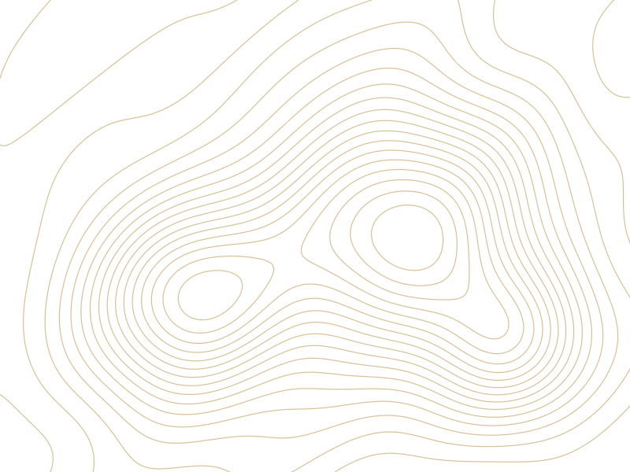

Contour
Metric depth from a sensor the size of a thumb, over one USB-C cable and on the same clock as your cameras. It measures distance directly, so plain, textureless surfaces read as well as patterned ones.
B1 · ContourUSB-C depth sensorRegister interest
B2 · Contour WristGripper mount, part of the Sync KitStations
Contour OEMModule for your own housingTalk to us
Sensor figures from ST’s datasheet. Size and mass come from our design and will be replaced by measurements.

Resolution54 × 42zones
Field of view55° × 42°
Frame rate30 Hz
Sensor range0.05–8.8 m
Diagram, not a product image
01Overview
Geometry at contact range.
01
Metric
Direct time-of-flight returns absolute distance whatever the surface color or texture.
02
Small
About 45 × 40 × 12 mm and under 40 g (target): light enough for a small follower arm’s gripper.
03
On the clock
A sync input lines depth frames up with your RGB cameras and the rest of the station.
04
In your pipeline
Appears as a camera in LeRobot, with depth and confidence for every frame.
02Contour Wrist
Depth beside the gripper, next to the camera you already run.
Contour Wrist mounts on the follower’s wrist with adapters for common arms and adds contact-range depth on the station clock. It ships in the Sync Kit.
- Station profile tuned for 5 cm to 1.5 m
- Per‑unit calibration file in the box
- Mounted on the follower, never the leader
Where it fits
| Lighting | Indoor, LED-lit stations |
|---|---|
| Frame rate | 30 Hz, depth + confidence |
| Resolution | 54 × 42 zones: contact geometry, not an RGB replacement |
| Not for | Direct sunlight, halogen lamps, scenes full of glass |
03Specification
| Sensor | ST VL53L9CX direct time-of-flight, 940 nm, Class 1 laser |
|---|---|
| Resolution | 54 × 42 zones; binned modes down to 4 × 4 |
| Field of view | 55° × 42° |
| Range | 0.05–8.8 m sensor range; 1.5 m clamp in the station profile |
| Frame rate | 30 Hz over USB, depth and confidence |
| Size, mass | About 45 × 40 × 12 mm, about 37 gEstimate |
| Power | USB-C; under 1 W in the station profileTarget |
| Interfaces | USB-C · sync input |
| Software | LeRobot camera plugin · Python |
Sensor figures from ST’s datasheet. Size, mass and power come from our design and will be replaced by measurements.
04OEM
The same module, in your product.
For headsets, wrist rigs and handheld grippers: the Contour module with the same calibration and sync, supplied with per‑unit test records and integration support.